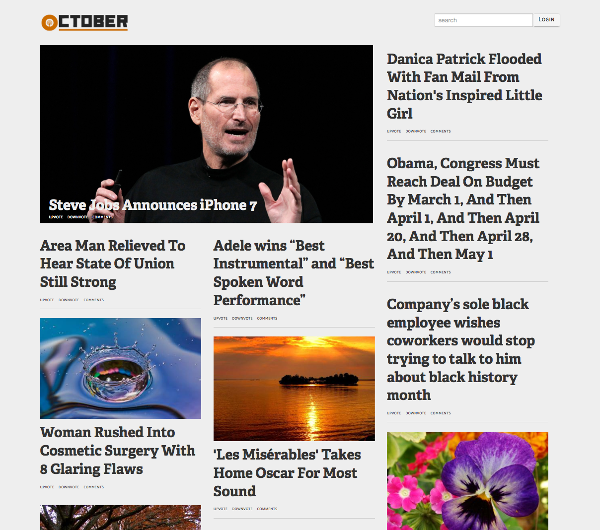

Project October
by Rajesh, Tom, Brian, and Mika

Progress Report
Testing
Architecture
Frontend
Homepage Requirements
Logged out user should be directed to a splash page.
Logged in user should be presented with new posts
User Signup/Login Requirements
Internet travelers should be able to create accounts on October easily by providing minimal information
username
email
password (Devise with bcrypt)
Sample content upon signup in order to determine interest
Able to link/reference a user's account in comments/posts similar to Twitter
User Profile Requirements
All users have public profile pages
Users will be able to add supplementary information not required for a profile here if they desire
Will not show personally identifiable information (such as email) unless explicitly requested
Will list submissions and comments from this user
Backend
Entities and Relations
←
→
/
Go to slide:
#